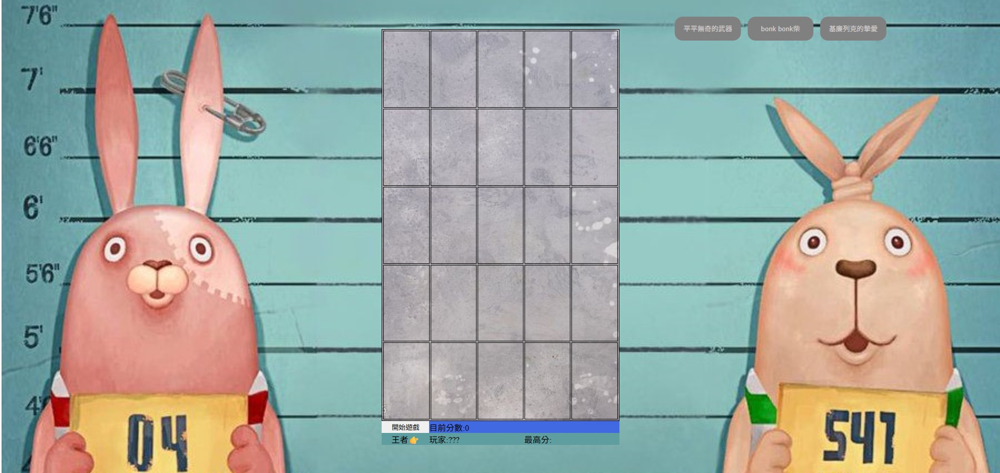

iOS (App Store)
入職後主要負責的專案，依據需求進行前端部分的開發與修改。
本專案為正式上線產品，相關功能與介面請掃描上方公開商店連結。
現任職於聯邦銀行資訊部，自2022年起投入金融系統前端開發，具備約4年 Vue 2、Vue 3、JavaScript 前端開發經驗，參與多項銀行對內、對外系統開發，並負責正式營運之行動銀行前端功能開發與維護。
曾獨立完成銀行內部系統開發，亦曾與其他工程師共同完成對外系統，具備獨立實作及團隊協作經驗。
參與行動銀行英文版開發，涵蓋前期規劃、功能實作、測試調整至正式上線。近期亦參與 QR Code 轉帳、Fast ID 身分驗證等專案，持續累積金融交易流程、身分驗證及前後端系統整合經驗。
日常開發以 Vue 2、Vue 3、JavaScript、TypeScript 為主，負責前端畫面、互動功能、表單驗證、API 串接及異常處理，並與後端工程師協作確認 API 規格及資料傳遞流程。
具備與 UI/UX 設計師共同開發系統共用元件的經驗，曾協助整理既有元件及可複用功能，並負責前端程式實作與維護，以提升介面一致性及開發效率。
開發過程中會主動評估設計可行性與使用者操作流程，針對元件重複設計、操作回饋不足等情況提出改善建議，協助團隊兼顧開發可行性、介面一致性及使用者體驗。
熟悉 RWD 響應式網頁設計與跨瀏覽器相容性調整，能依不同裝置及作業系統的呈現差異進行除錯與優化。
除前端開發外，亦具備 Nginx 服務部署、反向代理設定、SSL/TLS 憑證配置及 Linux 基本維運經驗。
熟悉 RSA 私鑰、CSR 憑證申請及中繼憑證鏈整合流程，能協助處理前端服務部署、憑證更新與相關環境問題。
持有銀行內部控制、信託、保險及 ESG 相關證照，具備金融業務流程與相關規範的基礎知識，能與業務單位、UI/UX 設計師及後端工程師進行跨團隊溝通。
期望持續深化前端工程能力，結合金融系統開發經驗、共用元件實作與使用者體驗思維，參與更具規模及多元性的數位金融服務開發。
視覺設計
前端開發 Front-end
後端開發 Back-end
環境部署與工具 DevOps & Tools
本專案為正式上線產品，相關功能與介面請掃描上方公開商店連結。

吃香喝辣是個與LINE結合的火鍋店官網，能夠讓使用者下單、候位。當訂單完成或是排到位子，便能夠透過官方機器人通知使用者。是個主打為店家與顧客省時省力的官方網站。
前台
後台

參考他人的UI設計，以 vue-cli 開發此網站，其中用到 Pug語法、 PWA 技術、chart.js 套件。
Vue.js
Pug
BootstrapVue

以 jQuery 語法寫出的小遊戲，遊戲內容為點擊皮卡丘的剪影。點擊後剪影的真面目是皮卡丘就加分，反之則扣分。
jQuery

面向幼兒的益智翻牌遊戲，需要翻出十二地支與其對應的生肖才能將牌面消除，消除後會彈出關於十二地支或生肖的小知識。
jQuery

純 JavaScript 寫出的小遊戲，打到綠色的兔子加分、紅色兔子扣分。開局前可以換武器，能有不同的效果。總分會儲存於 localstorage ，只會顯示最高分者。
JavaScript

設計的主題是外太空小怪物，網頁上除了能看到時間還能看到當前年月日。
JavaScript

在不使用任何 UI 框架下以純 CSS 刻出 TemplateMonster 內的任一版面。
CSS

Bootstrap 刻出的響應式咖啡店官網。
Bootstrap